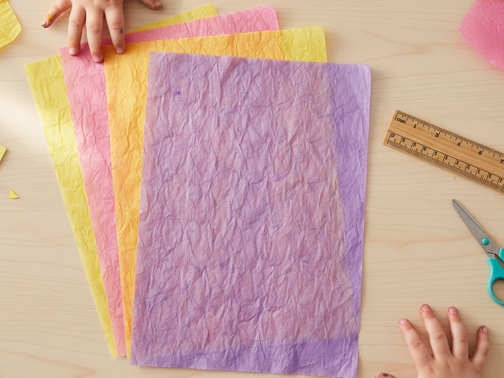
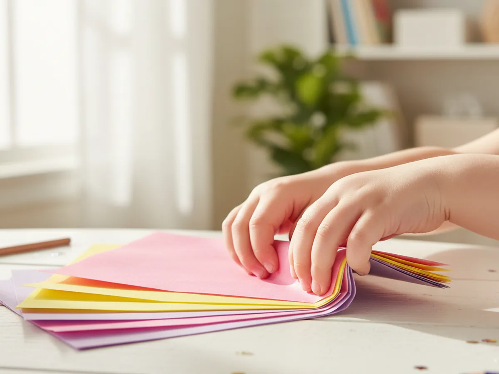
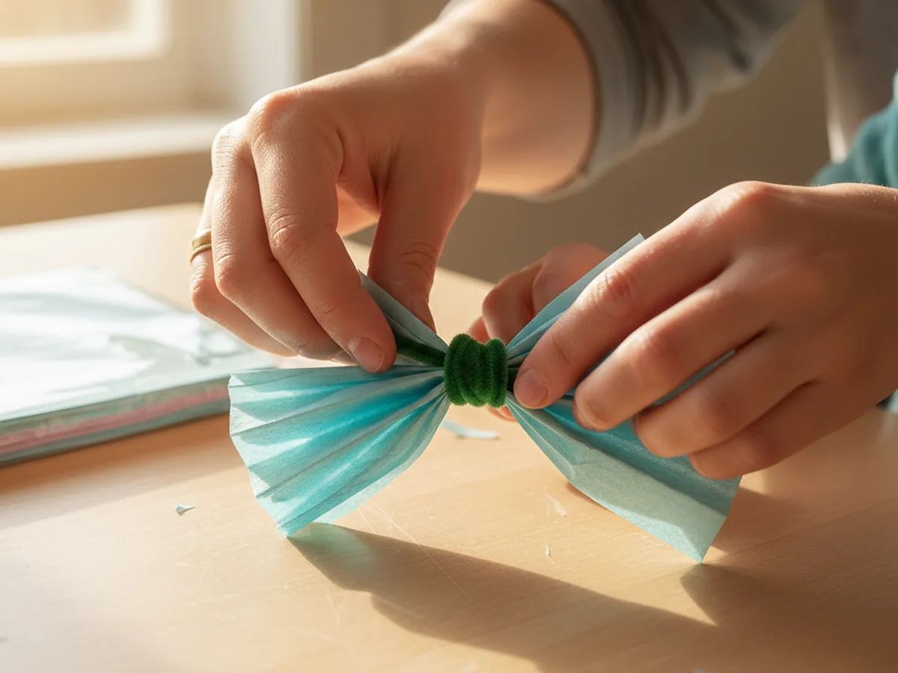
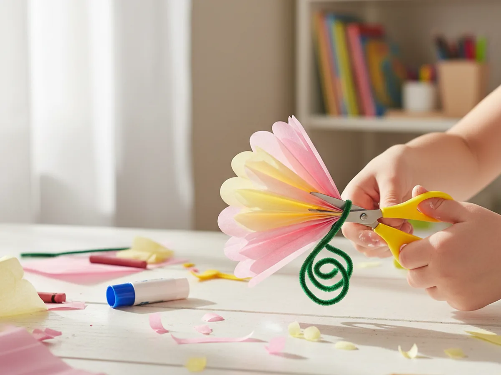
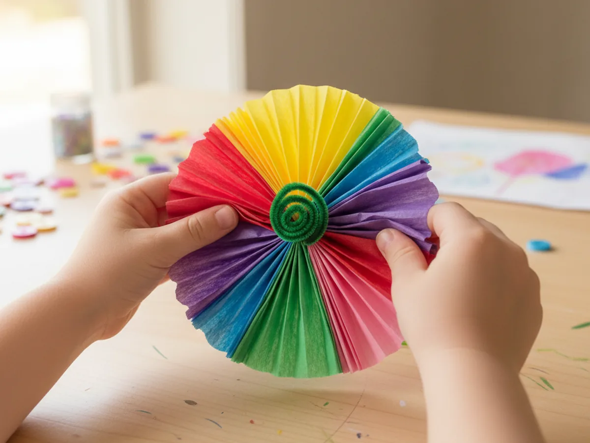
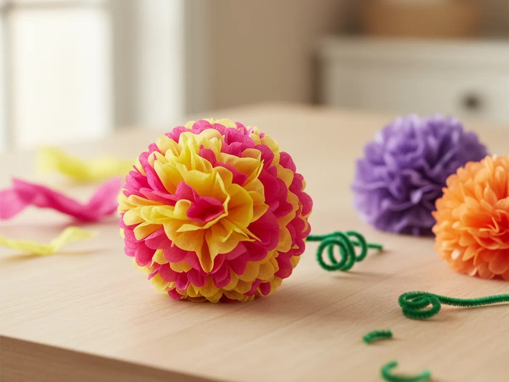

There is something genuinely magical about watching a stack of flat tissue paper turn into a full, fluffy flower right before your child's eyes. This tissue paper flower craft is one of those rare activities that feels exciting at every single step, and the finished result is something your little one will want to display, gift, or use to fill an entire vase. 🌸
You only need a few basic supplies, no painting or drying time, and the whole thing comes together in about 30 minutes. It is a wonderful rainy-day activity, a sweet Mother's Day project, or just a fun way to spend an afternoon together.
Why Kids Love This Craft
The accordion-folding part of this tissue paper flower craft is genuinely satisfying for young children. There is something deeply pleasing about the back-and-forth folding motion, and even toddlers can participate with a little guidance. Kids also love the moment when the flat paper fan suddenly transforms into a round, fluffy flower. That reveal always gets a gasp or a giggle.
Beyond the fun, this craft offers real developmental benefits. The folding and fluffing build fine motor strength and coordination. Choosing colors and making decisions about the design encourages creative thinking. And the finished flower gives children a genuine sense of pride, especially when it goes into a real vase or gets wrapped up as a gift for grandma. 🎨
The fact that tissue paper flowers involve zero paint and almost no mess makes this craft especially wonderful for busy days. You can do it at the kitchen table with nothing more than a packet of tissue paper and a handful of pipe cleaners.
What You'll Need
Here is everything you need to make a beautiful tissue paper flower craft with your child. Lay it all out before you start so you can dive right in.
- Multicolor tissue paper pack, at least 4 to 6 sheets per flower in your chosen colors.
- Pipe cleaners in assorted colors, one per flower to form the stem and center tie.
- Child-safe scissors, for trimming the petal ends into shape.
- Green construction paper, cut into simple leaf shapes if you want to add leaves to the stem.
- A ruler or small book, helpful for keeping your folds even (optional but handy).
Step-by-Step Instructions
Follow these six easy steps together and you will have a gorgeous flower in no time. Every step is beginner-friendly and totally doable even with very young helpers.
Step 1: Choose Your Colors and Prepare the Tissue Paper
Start by picking out 4 to 6 sheets of tissue paper for each flower. You can use all the same color for a classic look, or mix two or three complementary colors for something more vibrant. Stack the sheets neatly on top of each other and trim them so they are all the same size. A rectangle that is roughly 6 by 9 inches works beautifully for a medium-sized flower. If your sheets are already the right size, no trimming needed at all.
This is a great step for letting your child take the lead. Let them pick the colors and arrange the layers. Even a two-year-old can manage to pull sheets of tissue paper from a pack.

Step 2: Fold Accordion-Style
Starting at one short end of the stack, fold all the layers together in an accordion pattern, folding back and forth so the folds are each about one inch wide. Keep the folds as even and consistent as you can, but do not worry if they are not perfectly uniform. This is a handmade craft and slight variations in the folds actually make the petals look more natural and full.
Continue folding all the way to the other end of the stack until you have a long, narrow paper fan shape. Younger children can hold the fan steady while you fold, or they can try folding one layer at a time with your help.

Step 3: Secure the Center with a Pipe Cleaner
Once the entire stack is folded into a fan shape, pinch it firmly at the center. Wrap one end of a pipe cleaner tightly around the middle two or three times to hold everything together. Twist the pipe cleaner ends together snugly so the fan stays in place when you open it up. The stem of the pipe cleaner will become the flower stem, so you can leave it at whatever length looks good or trim it with scissors if needed.
This step can be a little fiddly for very small hands, so feel free to handle the wrapping yourself while your child holds the fan steady. Teamwork makes it easier and more fun.

Step 4: Trim the Petal Ends
Now grab your scissors and look at the two open ends of the folded fan. You can leave them flat for a more graphic, geometric flower shape, or trim them into soft rounded curves for a more petal-like look. A simple curved snip along each end is all it takes. You can also cut little pointed tips for a star-shaped flower or small scallops for a fringed effect.
This is a wonderful step for kids who are comfortable with scissors. Encourage them to try their own petal shapes. There is truly no wrong answer here. ✂️

Step 5: Fan Open the Layers
Hold the secured center between your fingers and gently fan out both sides of the accordion fold so the paper spreads open on either side of the pipe cleaner. The folded stack should now look like a wide, flat bow or butterfly shape. At this stage you can already see the flower beginning to take shape, and your child will probably start getting very excited.

Step 6: Fluff the Petals and Shape Your Flower
This is the best step. Starting with the top layer on one side, gently peel each sheet of tissue paper upward and toward the center of the flower, fluffing it out as you go. Work slowly and carefully since tissue paper tears easily if you rush. Do one layer at a time, alternating sides as you go, until both sides are fully fluffed and the flower is round and full.
Once all the layers are fluffed, gently shape the petals with your fingers to round out the flower and fill in any gaps. Your tissue paper flower is done! If you made a few, pop them into a vase or a mason jar and you have a gorgeous centerpiece that cost almost nothing to make. 💐

Variations to Try
Rainbow Ombre Flower: Layer tissue paper sheets that go from light to dark in the same color family, such as pale pink, medium pink, and deep rose. When you fluff the petals, the graduating shades create a stunning ombre effect. It looks much more elaborate than it actually is, and kids love picking the color gradient.
Mini Flower Bouquet for Toddlers: For children under three, use smaller sheets of tissue paper (about 4 by 6 inches) and pre-fold the accordion for them. Let your toddler do just the fluffing and shaping at the end. This keeps the activity achievable for the youngest crafters while still giving them an exciting result they made themselves.
Gift Topper Version: Skip the pipe cleaner stem and use a short twist tie instead to secure the center flat. These small puffy flowers make gorgeous gift toppers or gift bag decorations. Use colors that match the wrapping paper for a really polished, personal look without buying a single bow.
More Crafts You'll Love
If your child enjoyed making tissue paper flowers, these paper crafts are a wonderful next step:
- Gorgeous Paper Flower Craft for Kids: So Easy Even Toddlers Can Make a Beautiful Bouquet!
- Paper Chain Craft for Kids: Easy Step-by-Step Guide
Final Thoughts
This tissue paper flower craft is one of those projects that looks impressive but is genuinely easy for any age and skill level. The whole activity takes about 30 minutes, requires almost no cleanup, and ends with something beautiful your child will want to keep and show off. Whether you make one flower or a whole bouquet together, this is the kind of simple, joyful craft that sticks in a child's memory.
I hope your little one loves making their tissue paper flowers as much as mine do. Save this tutorial for spring breaks, rainy afternoons, or anytime you want a quick win together. Happy crafting! 🌺